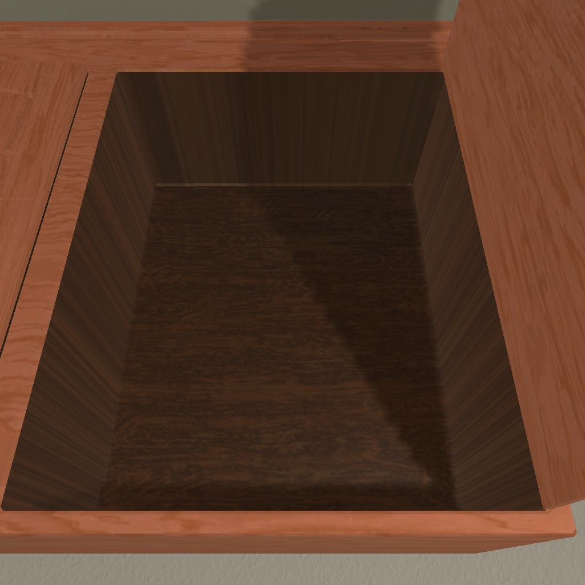

---------------------------------------------------------task: 23---------------------------------------------------------
--------------------------------------------------------------------------------------------------------------------------------------------------------------------
--------------------------------------------------------------------------------------------------------------------------------------------------------------------
Step:--------------------------------------------------------------------------14-------------------------------------------------------------------------------
----------------------------------------
VLM Prompt:
Image1:
Image2:
**Instruction**
1. Analyze the provided images to identify all visible household objects and compare the difference between images (e.h. whether the object is opened or not and taken on hand or not), focusing on those relevant to the task description "put a hot mug in coffeemachine."
2. Use the analysis of images and the task hint "The agent must find an object of the desired type, pick it up, go to a microwave, heat the object with the microwave, then find the correct location to place it, and put it down there. The agent does not need to use the microwave button or open the microwave to heat the object, and the agent just needs to do action that is "heat the object with the microwave"." to answer the question: what is the most reasonable action in the choices for the task description "put a hot mug in coffeemachine"?
3. Decide and write the answer using the template: The answer is: (i): , where i is the real number. If there is no desired object in images, search every place based on **Initial Observation** to find the object. And if no one is exactly correct, choose a similar answer.
**Initial Observation**
You are in the middle of a room. Looking quickly around you, you can see cabinet (1-15), fridge (1), countertop (1-4), drawer (1-4), microwave (1), toaster (1), coffeemachine (1), garbagecan (1), sink (1), stoveburner (1-3), sinkbasin (1)
**Answer Choices**
(1): go to cabinet 1
(2): go to fridge 1
(3): go to countertop 1
(4): go to cabinet 5
(5): go to cabinet 6
(6): go to cabinet 7
(7): go to drawer 1
(8): go to drawer 2
(9): go to cabinet 8
(10): go to drawer 3
(11): go to cabinet 9
(12): go to cabinet 10
(13): go to drawer 4
(14): go to microwave 1
(15): go to cabinet 11
(16): go to toaster 1
(17): go to cabinet 12
(18): go to cabinet 13
(19): go to cabinet 14
(20): go to cabinet 15
(21): go to countertop 2
(22): go to coffeemachine 1
(23): go to garbagecan 1
(24): go to countertop 3
(25): go to countertop 4
(26): go to sink 1
(27): go to stoveburner 1
(28): go to stoveburner 2
(29): go to stoveburner 3
(30): go to sinkbasin 1
(31): open cabinet 4
(32): close cabinet 4
(33): examine cabinet 4
**Answer**
Let's think step by step by following the instructions.
----------------------------------------
----------------------------------------
Original Response:
Image1 shows an open cabinet (cabinet 4) with no objects inside, while Image2 shows a countertop with a mug, a chocolate bar, a vegetable, and some other unidentifiable objects. The task description mentions "put a hot mug in coffeemachine," and the task hint clarifies that the agent must heat the object with the microwave before placing it in the correct location.
From the provided images and initial observation, it is clear that the agent needs to first find a mug, heat it in the microwave, and then put it in the coffeemachine. Since Image2 shows a mug on the countertop 1, the most reasonable action would be to pick up the mug from there. However, since the answer choices do not include an action to pick up the mug, we need to choose the next reasonable action based on the task hint.
The task hint states that the agent does not need to use the microwave button or open the microwave to heat the object; they just need to perform the action "heat the object with the microwave." Therefore, the agent should go to the microwave to heat the mug.
The answer is: (14): go to microwave 1.
----------------------------------------
----------------------------------------
>>> Refine Original VLM Response and Get Pure Action: go to microwave 1
----------------------------------------
-----------------------------------------------------------------
Running time: 14.792775869369507 seconds
Total Money: 11.909330000000002
-----------------------------------------------------------------
-----------------------------------------------------------------
Text Observation:You arrive at loc 16. The microwave 1 is closed.
-----------------------------------------------------------------
UNSUCCEED